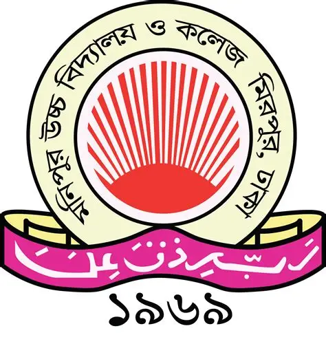

Bachelor of Science (BSc.) in CSE
 American International University-Bangladesh
American International University-Bangladesh
2023-Present
I have completed many core courses like Programming (C/C#/OOP), Data Structures, Data Warehousing and
Data Mining, Computer Graphics, Algorithms, Artificial Intelligence & Expert Systems, Software
Engineering, Software Qualitry and
Testing.
Major:Information Systems
Minor:Software Engineering
As part of my major in Information Systems, I have taken Data Science, Data Warehousing and Data Mining
and HCI.
where I learned concepts of data analysis, data processing and fundamental data mining algorithms and
models.
Higher Secondary Certificate (HSC)
Adamjee Cantonment College
2021
Completed Higher Secondary education with a strong foundation in core scientific and mathematical
disciplines, complemented by Biology as an elective to support broader understanding in life sciences.
Compulsory Courses: Physics, Chemistry, Higher Mathematics.
Elective Course: Biology
Secondary School Certificate (SSC)

Monipur Uchcha Vidyalaya and College
2019
Successfully completed Secondary education with focus on core science subjects, reinforced by Biology as
a fourth elective, establishing a balanced academic base in both quantitative and life science domains.
Compulsory Courses: Physics, Chemistry, Higher Mathematics.
Elective Course: Biology